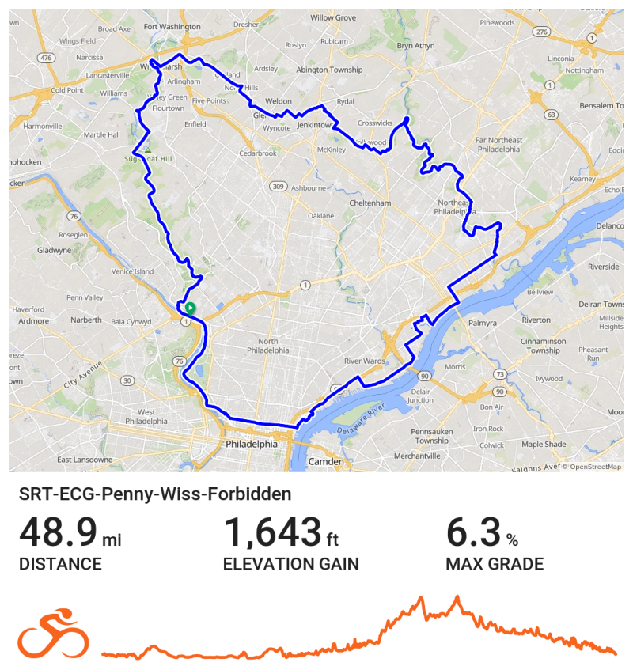

My Local Routes
Check out the Groups rides page to sign up to ride along!

SRT-ECG-Penny-Wiss-Forbidden
A ride around the area touching a lot of the bike trails. Down the Schuylkill River Trail then cross through the city over to the East Coast Greenway then to the Pennypack Trail. There is then a long section of different roads weaving up until we get to the Wissahickon trail, then finishing with a nice ride down Forbidden Drive.
...more to come.